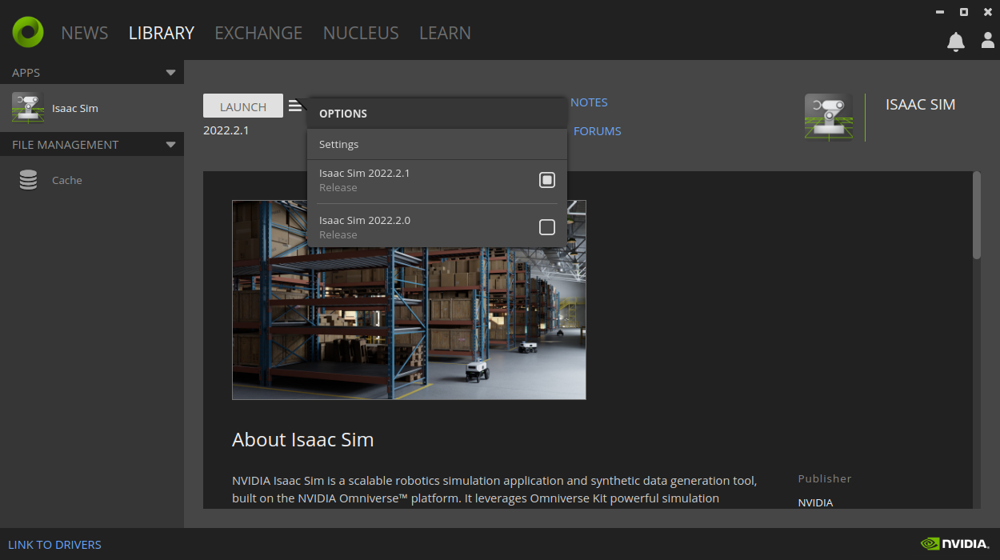
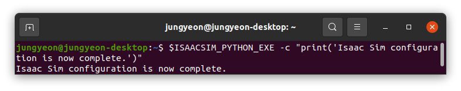

👩💻Orbit 설치하기
이번 포스팅은 Nvidia의 Omniverse Isaac Orbit에 대해 알아보고, Orbit Docs - Installation Guide를 따라 설치과정을 기록해보았습니다. 공식 문서를 참고하여 설치부터 예제 코드들을 살펴보며 시리즈로 포스팅할 예정입니다.
1 Orbit?
그럼, Orbit 이란 무엇을 말하는 걸까요? 공식 Docs에서는 다음과 같이 설명하고 있습니다.

소개글을 보면, 크게 2가지 특징을 살펴볼 수 있습니다. 첫번째로는 Robot learning을 위한 모듈화된 프레임워크라는 점을 알 수 있고 두번째로는 Omniverse와 Isaac Sim이라는 것에 기반한 프로그램이라는 것 입니다. Robot learning을 위한 이라는 말에서 Github 메인 사진에서도 볼 수 있듯이 로봇 작동을 위한 모든 learning 과정을 지원하기 위한 프레임 워크라는 것을 알 수 있습니다. 매니퓰레이터부터 핸드 로봇, 사족보행 로봇에 이르기까지 다양하고 폭넓은 로봇의 작동 시나리오를 지원해주는 프로그램이라는 것을 볼 수 있습니다.
하지만 Orbit이라는 프레임워크가 Omniverse와 Isaac Sim에 기반한다는 설명은 이전에 Nvidia의 시뮬레이터에 대해 알고 있지 못하신 분들이라면 생소하고 헷갈릴 수 있습니다. Nvidia의 시뮬레이터 개발과정이나 제품에 대해 깊이 알아보고자 하는 것이 이번 포스팅의 목적은 아니므로 간단하게 각 프로그램들의 역학관계를 살펴보자면, Omniverse > Isaac Sim > Orbit의 관계라고 파악해볼 수 있습니다. Omniverse가 가장 큰 범위의 가상세계를 위한 플랫폼이고 그 아래에 로봇틱스 분야를 위한 하위 플랫폼 Isaac Sim이 있고 마지막으로 그 안에 오늘 포스팅의 주인공인 Orbit이 있는 것 입니다.
여기까지 설명을 들었을 때 명확히 이해가 되지 않는 부분이 있을 수 있습니다. Isaac Sim도 로봇틱스 분야를 위한 하위 플랫폼인데 그 안에 Orbit으로 또 따로 Robot learning이라는 모듈 프레임워크가 더 필요할까 의문이 들 수 있습니다. 심지어 이전에 Nvidia의 시뮬레이터를 조금 아셨던 분들이라면, Isaac Gym이라는 강화학습, 즉 robot learning을 위한 (Issac Sim보다 좀 더 기능이 제한된) 프로그램이 있는데 Orbit은 어떤 위치인지 더 애매모호하게 느껴질 수 있습니다. 실제로 저도 기존에 Isaac Gym으로 강화학습을 진행해왔던 사람으로써 Orbit의 등장은 의아한 점이 있었습니다. 이런 의문을 많은 유저들도 느꼈던 것 같습니다. 포럼에 올라온 Q&A에서 공식 Orbit Maintainer의 답변으로는, Orbit은 Isaac Sim의 진입장벽을 낮추기 위한 내장 프레임워크로 2가지의 목적이 있어서 만들어졌다고 합니다. (Q&A 원본은 링크와 함께 아래에 적어두었으니 참고하시길 바랍니다.)
- 보다 간소화된 인터페이스를 통해서 로봇 학습을 위한 환경 설계 및 강화학습, 모션 플래닝 등과 같은 로봇틱스 워크 플로우를 지원하는 것
- 미리 구축된 환경을 벤치마크 예제로 사용하는 프론트 엔드 프레임워크로서 준비된 에셋과 환경 예제를 통해 warm-start를 할 수 있도록 하는 것
정리하자면, Orbit은 Robot Learning을 위한 Nvidia의 오픈 소스 프레임워크인데 가장 사용자에게 친근한(쉽게 시작할 수 있는) 프로그램 이라고 정리해볼 수 있을 것 같습니다. 비유를 들어서 Nvidia 플랫폼의 역학을 정리해보자면, Omniverse는 MS Office, Issac Sim은 Power Point, Orbit은 PPT 디자인 추천 프로그램 정도로 정리하고 넘어갈 수 있을 것 같습니다.
2 Orbit을 설치하기 전에
앞에서 정리한 대로 Orbit은 Omniverse 안에 Isaac Sim을 기반으로 돌아가는 모듈이기 때문에 IsaacSim을 먼저 설치해야 합니다. 엄밀히 말하자면 아직 Orbit을 설치한 것은 아니고, Orbit이라는 기능을 사용하기 위해 준비하는 과정이라고 생각하시면 될 것 같습니다. Isaac Sim은 크게 (1)Workstation Installation과 (2)Container Installation 2가지 방법으로 설치할 수 있습니다. 각자 개인 컴퓨터를 사용하여 이용하고자 한다면 첫번째 Workstation Installation을 따라가면 되므로 이번 포스팅에서는 Workstation Installation 방법을 따라서 설치를 진행하겠습니다.
- Workstation Installation: 공식 홈페이지의 Isaac Sim 설치방법(Workstation Installation)을 따라 Omniverse App을 통해
Isaac Sim 2022.2을 설치합니다. 아래는 제가 설치를 진행했던 스펙입니다. (만약 해당 컴퓨터 자원이 없다면 클라우드 자원을 이용하여 Isaac Sim을 사용할 수 있습니다.)
- Ubuntu 20.04 LTS
- Nvidia RTX 4080
- Driver Version: 525.60.13
Isaac Sim의 설치과정은 Documentation에 step by step으로 잘 나와있으므로 자세하게 설명하진 않겠습니다. 아래와 같이 Omniverse App에서 Isaac Sim이 보이고 LANCH라는 버튼을 눌러 실행할 수 있으면 설치에 성공한 것 입니다. (23.04.05 기준) 최신 버젼 2022.2.1이 맞는지 꼭 확인해주시고 만약 최신 버젼이 아니라면 LANCH 옆의 list 버튼을 눌러서 최신 버젼을 다운받고 버젼을 선택할 수 있습니다. 아래 사진에서 처럼 2022.2.1 버젼으로 선택되어 있는 것을 확인할 수 있습니다.

Python Environment Setting: Isaac Sim은 내부(built-in) Python 3.7이 있고 이 default Python 환경을 사용하는 것이 좋습니다. IsaacSim Default Python Environment을 사용하기 위해서는 아래의 예시 command와 같이 Isaac Sim의 Root folder(Isaac Sim 설치시 별도의 경로 설정이 없이 설치했을 경우
${HOME}/.local/share/ov/pkg/isaac_sim-*,*은 해당 Isaac Sim의 버젼)에 있는 Python 실행파일인python.sh를 가지고 실행해야 합니다.# ${HOME}/.local/share/ov/pkg/isaac_sim-2022.2.1 ./python.sh path/to/script.pyIsaac Sim의 Default Folder 
하지만 이와 같이 매번 Isaac Sim의 내부 python 실행파일 경로를 입력하여 python 스크립트를 돌리는 것은 매우 번거로우므로 시스템 환경 변수 설정를 통해 간단히 내부 python을 불러올 수 있습니다. Linux Ubuntu에서는 시스템 환경 변수를 설정하는 파일은
~/.bashrc나~/.zshrc를 사용합니다. 아래와 같이 리눅스 GUI 환경에서 지원하는 텍스트 에디터인 gedit을 이용하여 시스템 환경 변수를 설정해보겠습니다. Terminal 창을 열어서 command를 입력합니다.팝업되는 .bashrc 파일의 맨 아래에 다음과 같이 입력합니다.
#으로 훗날 여러 시스템 환경 변수들을 왜 설정했는지 메모하기 위해서 주석을 달아놓는 것을 권장합니다.(Orbit을 사용하지 않고 Isaac Sim만 설치하는 공식 문서에서는 같은 파이썬 실행파일을 다른 환경 변수로 설치하기 때문에 중복되어 이름을 설치 하지 않도록 주의합니다.) 추가한 후 저장하고 창을 닫습니다.# Isaac Sim root directory export ISAACSIM_PATH="${HOME}/.local/share/ov/pkg/isaac_sim-2022.2.1" # Isaac Sim python executable export ISAACSIM_PYTHON_EXE="${ISAACSIM_PATH}/python.sh"파일을 편집했다고 바로 추가된 환경 변수가 바로 적용되는 것이 아니라 아래의 command까지 터미널에서 실행시키고 나서 적용이 됩니다.
실행 확인 : 프로그램 설치와 환경변수까지 제대로 설정되었는지 확인하기 위해 Running the simulator에 안내되어 있는 몇 가지 점검 command를 실행시켜 보겠습니다.
시뮬레이터 실행 파일(
isaac-sim.sh) 확인# note: you can pass the argument `--help` to see all arguments possible. $ISAACSIM_PATH/isaac-sim.sh --help
시뮬레이터 내부 파이썬 실행 파일(
python.sh) 확인# checks that python path is set correctly $ISAACSIM_PYTHON_EXE -c "print('Isaac Sim configuration is now complete.')"
시뮬레이터 standalone 예제(
add_cubes.py)로 실행 확인# checks that Isaac Sim can be launched from python $ISAACSIM_PYTHON_EXE $ISAACSIM_PATH/standalone_examples/api/omni.isaac.core/add_cubes.pyadd_cubes.py 실행 결과 
3 Orbit 설치하기
이제 Orbit을 본격적으로 설치해보려고 합니다. 앞서 Isaac Sim이 제대로 설치가 되고 예제까지 돌아가는지 꼭 확인을 한 후 진행해주시기 바랍니다.
Orbit repository를
git clone해오기Symbolic link 생성하기: 심볼릭 링크란 원본 파일을 가리키도록 하는 윈도우에서의
바로가기아이콘과 같은 의미로 이해하시면 됩니다. 위에서git clone한 repo의 위치로 들어가서 다음과 같은 명령어를 통해 심볼릭 링크를 만들어 줍니다.Orbit 실행파일 명령어 등록하기: orbit을 실행하기 위해서는 매번 git clone 한 repository에 있는
orbit.sh파일을 써주어야 합니다. 만약orbit.sh이 있는 위치에서 실행시킨다면./orbit.sh로 간단하겠지만 다른 위치의 파일을 Orbit에서 실행시키고 싶을 때 단축키가 있다면 훨씬 간편하게 실행할 수 있어 편리할 것 입니다. Orbit을 편리하게 실행시킬 수 있는 명령어로는orbit으로 정해서 즉,./orbit.sh와orbit이 같도록 하는 작업을 진행해보겠습니다. 앞서 리눅스의 시스템 환경변수를 설정하는 방법에서.bashrc파일을 이용하여 명령어 별칭을 등록하는 방법을 이용합니다.echo -e "alias orbit=$(pwd)/orbit.sh" >> ${HOME}/.bashrc별칭 등록을 적용하기 위해
source ~/.bashrc도 잊지 않고 실행해주세요.(명령어가 제대로 등록됐는지 확인해보려면gedit ~/.bashrc를 통해 파일에서 맨 아랫줄에alias orbit=$(Orbit 레포지토리 위치)/orbit.sh이 써있는지 확인해보면 됩니다.) 터미널에서 아래의 명령어를 입력했을때 다음과 같은 창이 나온다면 명령어 별칭 등록이 잘 된 것 입니다.orbit --helporbit 명령어 별칭 확인 
4 Orbit에서 가상환경 설정
Orbit에서는 orbit -p라는 명령어를 통해 Isaac Sim의 파이썬 실행파일을 자동으로 가져와서 사용합니다. (혹은 위에서 명령어 별칭을 등록안했다면 Orbit repo 위치에서 ./orbit.sh -p라고 입력해도 됩니다.) 하지만 가상환경을 사용하고 싶다면 Conda를 이용하면 됩니다.
orbit -c (또는 --conda)위와 같이 입력하면 자동으로 orbit이라는 이름의 가상환경이 만들어지고 앞으로 이 가상환경을 사용하고 싶다면 conda activate orbit을 통해 활성화 시킬 수 있습니다.

5 Extensions 설치
apt를 이용해서 우분투에서 디펜던시를 설치합니다.sudo apt install cmake build-essentialOrbit repo에 있는
source/extensions폴더의 확장프로그램들을 설치합니다. 이때--editableflag로 편집 가능한 모드로 설치하게 되어 개발자가 확장 기능을 수정하게 되면 변경사항이 즉시 적용됩니다.orbit --install # or orbit -i(rsl-rl 같은)Learning framework 등의 여러 디펜던시 프로그램들을 설치합니다.
orbit --extra # or orbit -e
6 Closing
마지막까지 설치과정을 잘 마치셨다면 아래의 명령어를 입력 했을 때 사족보행 로봇들이 나오면서 Orbit이 잘 실행되는 것을 확인하실 수 있습니다!👏👏👏(처음 실행시 시간이 조금 걸릴 수 있으니 기다려주세요.)
orbit -p source/standalone/demo/play_quadrupeds.py
이번 포스팅에서는 Nvidia의 Orbit에 대해 간단히 알아보고 설치까지 진행해보았습니다. 아직 공식 Documentation도 업데이트 중이고 프로그램 자체도 업데이트가 활발히 되고 있어서 이후에 이번 포스팅이 버젼에 따라 도움이 안될 수도 있겠지만 많은 분들께 참고가 되었으면 좋겠습니다. 설치과정에 대해 다른 옵션들이나 자세하게 알고 싶으신 분들은 공식 설치 Documentation을 참고하시면 업데이트 되는 소식들과 함께 더 자세하고 많은 정보를 얻으실 수 있을 것 같습니다. 이어지는 포스팅에서는 각 예제들을 통해서 Orbit에 대해 더 알아보도록 하겠습니다.